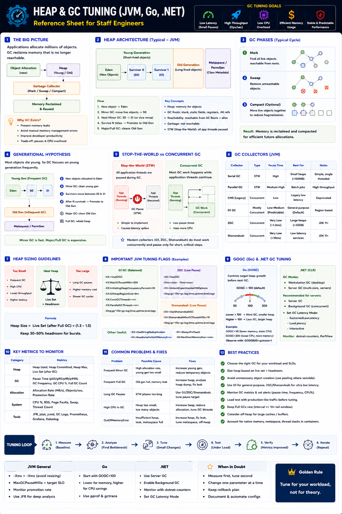

JVM, Go, .NET — Staff Engineer level
The Big Picture
Every managed runtime (Java → JVM Heap, Go → Go Heap, .NET → CLR Heap) continuously allocates and reclaims memory. Poor tuning causes:
The goal is to balance latency, throughput, CPU usage, and memory footprint. Every optimization is a trade-off.
Common Tuning Objectives
| Goal | Preferred Strategy |
|---|---|
| Low Latency | Concurrent GC + Larger Heap |
| Maximum Throughput | Parallel GC |
| Low Memory Usage | Smaller Heap |
| Cloud Microservices | G1 / Go Concurrent GC |
| Large JVM (>32 GB) | ZGC / Shenandoah |
Heap Sizing — The First Decision
Heap Too Small
Heap Too Large
Sizing formula: Heap Size = Live Set + Headroom (30–50% above measured live set)
GC Tuning Goals
| Metric | Desired Result |
|---|---|
| Pause Time | Low |
| Throughput | High |
| CPU Usage | Moderate |
| Memory Usage | Efficient |
| Full GC Frequency | Very Rare |
JVM Collector Choices
| Collector | Strength | Best Use Case |
|---|---|---|
| Serial GC | Simplicity | Small utilities |
| Parallel GC | Highest throughput | Batch jobs |
| G1 GC | Balanced | General production services |
| ZGC | Ultra-low pause (~1–2 ms) | Large heaps (>32 GB) |
| Shenandoah | Concurrent compaction | Low-latency microservices |
Go Heap Tuning
Go uses a concurrent garbage collector. Primary tuning knob: GOGC (default = 100).
Lower GOGC (e.g. 50)
More frequent GC → Smaller heap → Higher CPU
Higher GOGC (e.g. 200)
Less frequent GC → Larger heap → Lower CPU
Go 1.19+ also supports GOMEMLIMIT — hard cap on total memory. Best practice: set GOMEMLIMIT just below container limit.
.NET Heap Tuning
| Mode | Best For |
|---|---|
| Workstation GC | Desktop applications |
| Server GC | Multi-core servers (parallel, better scalability) |
Heap Tuning Metrics to Monitor
| Metric | Why It Matters |
|---|---|
| Heap Used | Current memory consumption |
| Live Set | Actual surviving objects after GC |
| Allocation Rate | Object creation speed |
| Promotion Rate | Young → Old movement rate |
| GC Pause Time | Direct latency impact |
| Full GC Count | Heap health indicator |
| GC CPU % | Collector overhead |
GC Observability Tools
JVM
Go
.NET
Off-Heap Memory
Not all memory belongs to the managed heap. Ignoring off-heap usage causes unexpected OOM errors.
Containers & Kubernetes
Heap should never consume the entire container memory limit. Always reserve space for off-heap components.
Common rule: set JVM heap to 50–75% of container memory limit. Use -XX:MaxRAMPercentage=75 for container-aware sizing.
Staff Engineer Thinking
Junior
Why is GC running?
Senior
Why are Full GCs increasing?
Staff asks
Production Failure Scenarios
Frequent Minor GC
Cause: High object allocation rate · Fix: Reduce temporary object creation or increase Young Generation
Frequent Full GC
Cause: Old Generation exhausted · Fix: Increase heap or reduce long-lived objects
High P99 Latency
Cause: Stop-the-World pauses · Fix: Switch to G1, ZGC, or Shenandoah
OutOfMemory Error
Cause: Memory leak or insufficient heap · Fix: Analyze heap dump to identify retained objects
High GC CPU
Cause: Heap too small or allocation rate too high · Fix: Increase heap or reduce allocation churn
Runtime Comparison
| Feature | JVM | Go | .NET |
|---|---|---|---|
| Heap Model | Generational | Concurrent | Generational |
| Default Collector | G1 (modern JDK) | Concurrent GC | Server/Background GC |
| Primary Tuning | Heap + GC Flags | GOGC / GOMEMLIMIT | GC Mode + Heap Limits |
| Low-Latency Option | ZGC / Shenandoah | Default Concurrent GC | Background Server GC |
| Best For | Enterprise & Microservices | Cloud-native services | Windows / Cross-platform |
Production Tuning Workflow
Never tune GC blindly. Measure → Tune → Verify.
Production Debugging Checklist
-XX:MaxRAMPercentage)Key Takeaways
